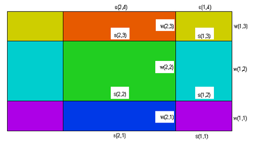

|
Setting Boundary Conditions in 3D |

  
|
|
Setting Boundary Conditions in 3D |
|
The specification of boundary conditions in 3D problems is an extension of the techniques used in 2D.
| • | Boundary condition specifications that in 2D applied to a bounding curve are applied in 3D to the extruded sidewalls generated by that curve. |
| • | The qualifier LAYER number or LAYER "name" may be applied to such a sidewall boundary condition to restrict its application to a specific layer of the sidewall. |
| • | Boundary conditions for extrusion surfaces are constructed as if they were parameter redefinitions over a REGION or over the entire 2D domain. In these cases, the qualifier SURFACE number or SURFACE "name" must precede the boundary condition definition. |
In the following figure, we have labeled the various surfaces which can be assigned distinct boundary conditions. Layer interface surfaces have been labeled with an "s", while sidewall surfaces have been labeled with "w". We have shown only a single sidewall intersection in our cross-sectional picture, but in fact each segment of the bounding trace in the base plane can specify a distinct "w" type wall boundary condition.

The comprehensive logical structure of the BOUNDARIES section with the locations of the boundary condition specifications in 3D can be diagrammed as follows:
BOUNDARIES
SURFACE 1
s(all, 1) { BC's on surface 1 over full domain }
SURFACE 2
s(all, 2) { BC's on surface 2 over full domain }
{…other surfaces }
REGION 1
SURFACE 1
s(1,1) { BC's on surface 1, restricted to region 1 }
SURFACE 2
s(1,2) { BC's on surface 2, restricted to region 1 }
...
START(,) { -- begin the perimeter of region m }
w(1,..) { BC's on following segments of sidewall of region 1 on all layers }
LAYER 1
w(1,1) { BC's on following segments of sidewall of region 1, restricted to layer 1 }
LAYER 2
w(1,2) { BC's on following segments of sidewall of region 1, restricted to layer 2 }
...
LINE TO ....
{ segments of the base plane boundary with above BC's }
LAYER 1
w(1,1) { new BC's on following segments of sidewall of region 1, restricted to layer 1 }
...
LINE TO ....
{ continue the perimeter of region 1 with modified boundary conditions }
TO CLOSE
REGION 2
SURFACE 1
s(2,1) { BC's on surface 1, restricted to region 2 }
SURFACE 2
s(2,2) { BC's on surface 2, restricted to region 2 }
...
START(,) { -- begin the perimeter of region m }
w(2,..) { BC's on following segments of sidewall of region 2 on all layers }
LAYER 1
w(2,1){ BC's on following segments of sidewall of region 2, restricted to layer 1 }
LAYER 2
w(2,2){ BC's on following segments of sidewall of region 2, restricted to layer 2 }
...
LINE TO ....
{ segments of the base plane boundary with above BC's }
LAYER 1
w(2,1) { new BC's on following segments of sidewall of region 2, restricted to layer 1 }
...
LINE TO ...
{ continue the perimeter of region 2 with modified boundary conditions }
TO CLOSE
Remember that, as in 2D, REGIONS appearing later in the script will overlay and cover up portions of earlier regions in the base plane. So the real extent of REGION 1 is that part of the base plane within the perimeter of REGION 1 which is not contained in any later REGION.
For an example of how this works, suppose we want to apply a fixed temperature "Tcan" to the surface of the canister of our previous example. The canister portion of the domain has three surfaces, the bottom, the top, and the sidewall.
The layer dividing SURFACES that define the bottom and top of the canister are named 'Can Bottom' and 'Can Top'. The part we want to assign is that part of the surfaces which lies above region 2 of the base plane. We therefore put a boundary condition statement inside of the region 2 definition, together with a SURFACE qualifier.
The sidewall of the canister is the extrusion of the bounding line of REGION 2, restricted to that part contained in the layer named 'Can'. So we add a boundary condition to the bounding curve of REGION 2, with a LAYER qualifier.
The modified BOUNDARIES section then looks like this:
BOUNDARIES
REGION 1 'box'
START(-1,-1)
VALUE(Phi)=0 LINE TO (1,-1)
NATURAL(Phi)=0 LINE TO (1,1)
VALUE(Phi)=1 LINE TO (-1,1)
NATURAL(Phi)=0 LINE TO CLOSE
REGION 2 'blob' { the embedded blob }
SURFACE 'Can Bottom' VALUE(Phi)=Tcan
SURFACE 'Can Top' VALUE(Phi)=Tcan
{ parameter redefinition in the 'Can' layer only: }
LAYER 2 k = 0.001
START 'ring' (R,0)
{ boundary condition in the 'Can' layer only: }
LAYER 'Can' VALUE(Phi)=Tcan
ARC(CENTER=0,0) ANGLE=360 TO CLOSE